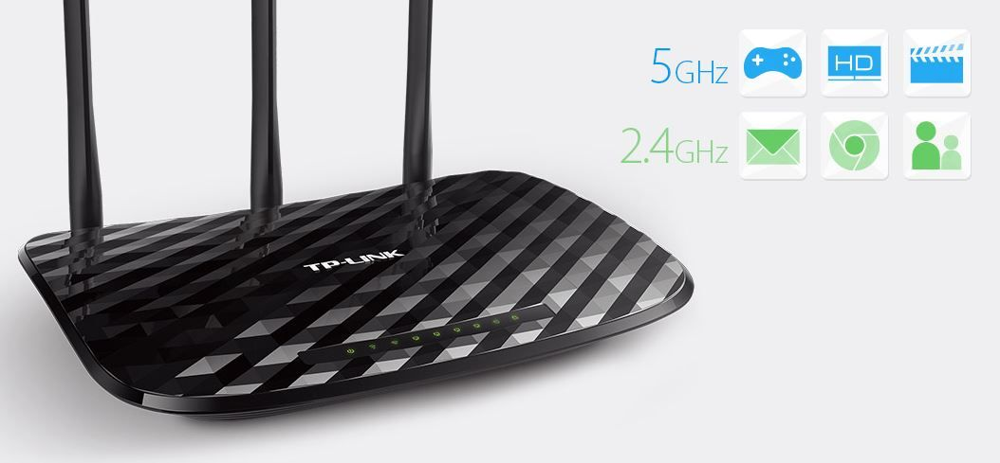

Router TP-Link Archer C2, AC900, Dual Band, Gigabit
159,99 lei
in stoc
Garantie inclusa:36 luni
Descriere
Viteza wireless excelenta cu standardul 802.11ac Dispunand de standardul Wi-Fi de ultima generatie - 802.11ac, de 3 ori mai rapid decat vitezele wireless oferite de standardul N, Archer C2 ofera o rata de transfer wireless combinata de pana la 883Mbps. Cu viteze wireless de 433Mbps pe banda de 5GHz si 450 Mbps pe banda de 2.4GHz, Archer C2 este o alegere ideala pentru diverse aplicatii. Doua benzi simultane pentru a-ti desfasura munca fara intarzieri Benzile simultane de 2.4GHz si 5GHz iti ofera flexibilitatea a doua retele dedicate - cu mai multa latime de banda pentru nevoile tale. Aplicatiile simple, cum ar fi trimiterea e-mailurilor sau navigarea pe Internet, pot folosi frecventa de 2,4GHz, in timp ce aplicatiile care necesita banda mare, cum ar fi jocurile online sau streamingul video HD, pot folosi frecventa de 5GHz – toate in acelasi timp.
